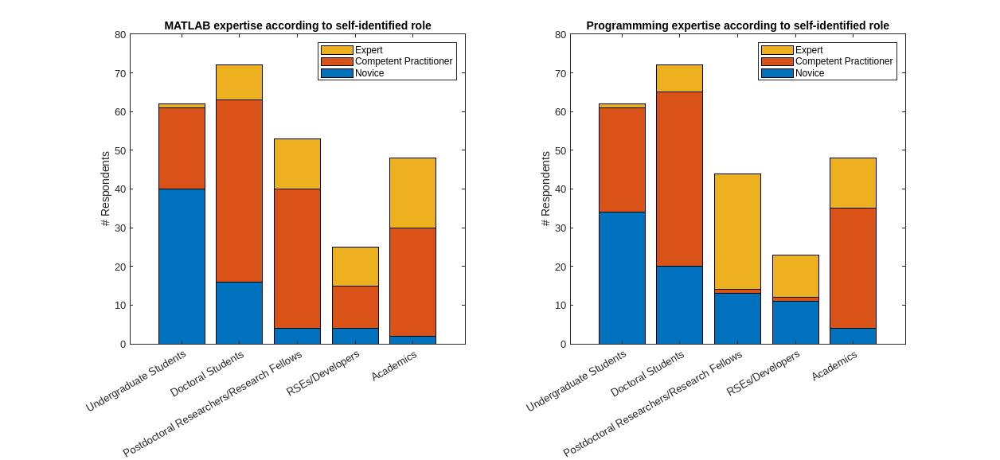
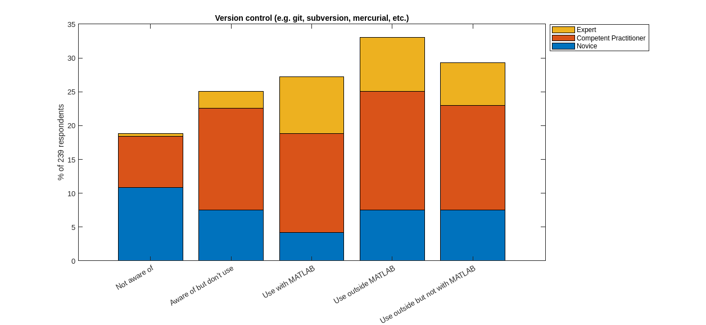
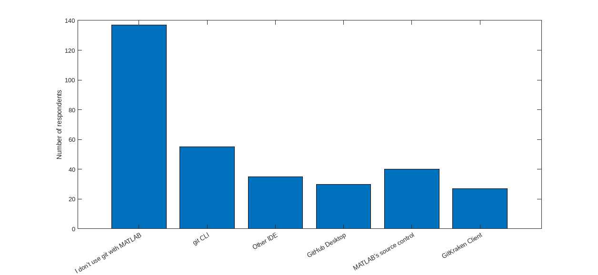
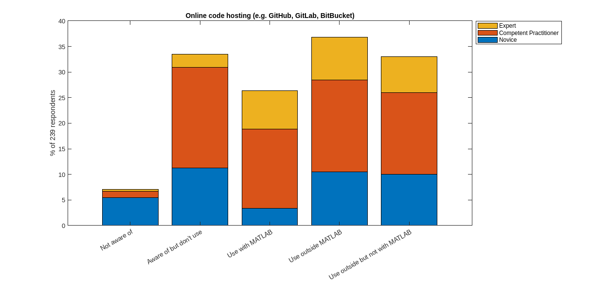
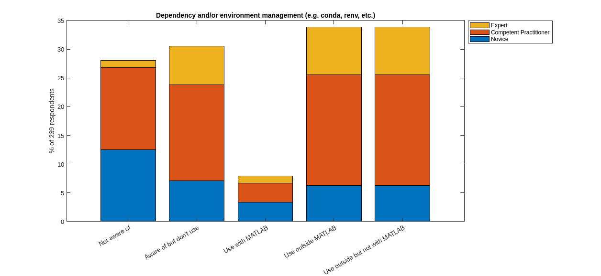
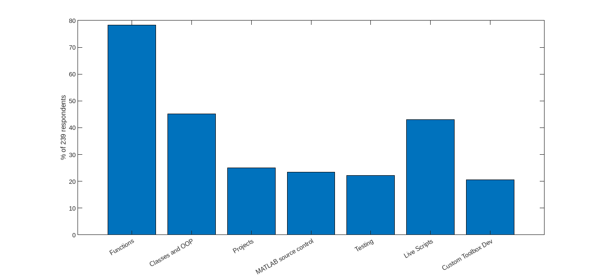
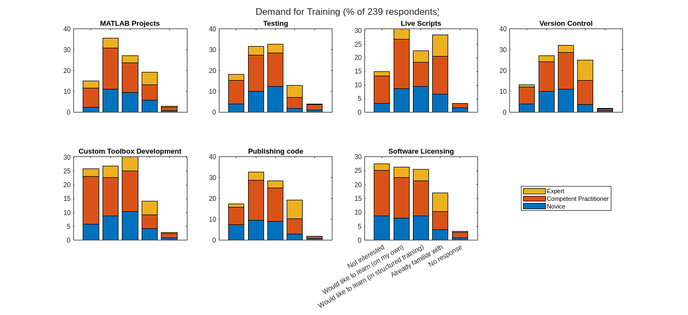
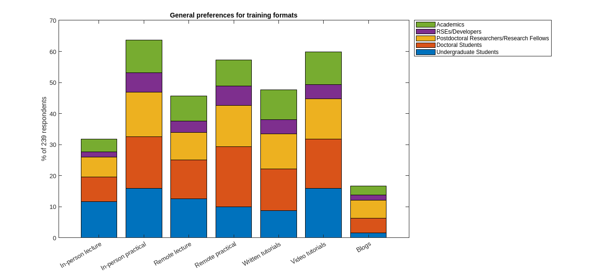
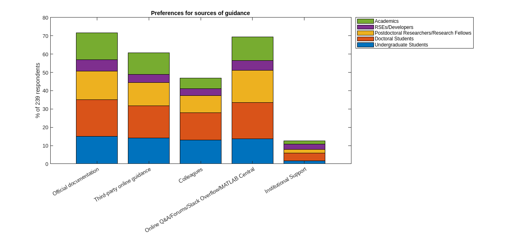

Image produced by DreamStudio
To help me get started developing a training resource for reproducible MATLAB, I began with surveying researchers who use it to find out what they know already, what they’d like to know and how they’d like to learn things. I have some advantage and some disadvantage here, at least for the time-being, as a former researcher who got their start through MATLAB, I have some idea of the level of knowledge and the concerns that researchers have. However, I’m only a sample size of one and I’ve also been acting as a research software engineer for a few years, so I needed to get out of my bubble, and what better way to do that than with graphs 😁.
You can see the questions I asked and the contents of the survey alongside the data, analysis and results at the survey’s repository. Naturally, it was important the survey’s analysis itself was reproducible, so the code can be downloaded and hopefully run reproducibly. The full analysis can be seen here.
Who was surveyed?
The survey was circulated via social media (e.g Twitter, Mastodon) and by a few mailing lists via research software engineers contacted through the RSE Society slack. At the University of Sheffield, where I work, it was also sent out to all users of MATLAB. These were chosen deliberately to target users in a university research setting. We can see from the raw data that the vast majority of respondents were based at academic research institutions, most of which were universities. There were no responses that needed to be removed as a result of being outside of this target group. One caveat is that, without targeting more user groups consisting of all MATLAB users, many of the respondents may have been likely to be more expert than a representative sample by being on RSE mailing lists, following RSEs on social media etc. However, as you’ll see, we collected self-perceived experience levels, allowing the data to be categorised on that basis.
To start with, I asked the respondents to indicate their self-perceived level of expertise with MATLAB, and with programming in general. Let’s divide this up according to their reported career stage, note that it was possible for respondents to select multiple career stages.

What’s the current situation?
Now we can get into the questions that provide more insight that will be relevant to my training course. Firstly, I wanted to know what tools are currently used with MATLAB when it comes to “good practice” and reproducible development.
Version control/source code management
Version control (or source code management) is an exceptionally valuable tool in any development of code. I wanted to know how likely our respondents were to use source code management tools such as git as well as online hosting and collaboration platforms such as GitHub. Additionally, I was interested to see whether there would be a difference in usage when it comes to working in MATLAB versus other languages.
For this and the next few questions, I asked participants to respond “Not aware of”, “Aware of but don’t use”, “Aware of and use with MATLAB”, “Aware of and use outside MATLAB”, and they could choose more than one if they wanted to. In the analysis I’ve derived another classification “Use outside but not with MATLAB” which is what it sounds like.

Without doing some statistical analysis, it is of course diffcult to draw precise conclusions, but let’s treat the findings qualatively. (Note that if you want to do some stats here, you can contribute back to this repository via a pull request on GitHub).
For this question, I was pleasantly surprised to see that ~90% of respondents were aware of version control, higher than perhaps I might have expected, though our survey respondents may have been a slightly self-selected population. What’s particularly interesting to me here is the ~25% who use version control outside of MATLAB, but not with it. Depending on whether participants interpreted the ‘Use outside MATLAB’ and ‘Use outside but not with MATLAB’ as being equivalent or not (that’s a lesson for me on study design!), this could be seen to be as high as ~50%. Without digging further into why the “Aware of but don’t use” group responded that way, we can’t tell why, but we may be able to conclude that out of this group of 239 MATLAB users, up to around 75% don’t use version control when working with MATLAB, despite most being aware of it.
Additionally, we asked respondents to let us know which method they use to interact with git. There are lots of clients to use, including command-line and various graphical types, including the interface in the MATLAB IDE itself.
Immediately we can see that the biggest group here are those who choose not to use git with MATLAB at all. (I haven’t analysed how many of this group don’t use git at all, though you could contribute that analysis via a pull request 😁)
Out of those who use git when working with MATLAB there’s a fairly even spread across the interfaces mentioned including the native git command line interface, tools in other IDEs such as VScode or pycharm, GUIs such as GitHub Desktop or GitKraken client, and a fairly good chunk of users who do use the tools built into MATLAB itself. It’s worth pointing out here that the git integration in the GUI seems to have some nice impovements in the new MATLAB IDE launched recently in R2023a.

Next, let’s take a look at GitHub/GitLab/BitBucket.

Straight away, we can see that there’s an increase in awareness in relation to the version control tools themselves, more participants are aware of GitHub than they are of git, which might be a lesson to those of us who support researchers. Otherwise the pattern is broadly similar here, only 20% use GitHub when working with MATLAB.
Dependency and Environment Management
When it comes to reproducibility, managing dependencies and environment - i.e. the software that your code relies upon to run - is the fundamental challenge. It’s not an easy thing to do, but once you do, it can allow you to run your code almost anywhere. In many ways this is the crux of reproducibility of research analysis.
For MATLAB, I found this a particularly difficult question to pose, and I’m not sure I’ve done the best job. Participants were asked to indicate their level of awareness and use of “Dependency and/or environment management (e.g. conda, renv, etc.)” which gives the examples conda and renv - common environment management tools in python and R respectively. However, to my knowledge, MATLAB doesn’t have equivalent tools. The closest is perhaps the “Project”, which we’ll investigate further later on.

Here, it looks like most (if not all) of those participants who use these tools outside MATLAB, might not use them with MATLAB, but perhaps this is because conda and renv aren’t relevant and participants were left to themselves to work out what dependency and environment managment looks like in MATLAB. However, some respondents do use these tools with MATLAB apparently, so I’m unsure what conclusion to draw here - possibly that I posed the question poorly. Either way, it looks like a fairly small number use dependency or environment management with MATLAB, through lack of availability of tools or awareness of the concepts.
We also asked similar questions about continuous integration, testing and literate programming, which you can see the results for here.
Usage of existing MATLAB tools and language features
Next up, participants were asked to indicate which of a list of MATLAB features relating to reproducibility and code quality that they use.

Out of the list, language features such as functions and classes were the most popular, but live scripts also see a high level of usage here as well, which is great! The other tools such as projects, source control, testing and custom toolbox development, see less use by this group, but still a fairly good proportion at around 20%.
These are some of the tools that I consider to be “best practice”, so it’s great to see that there is some adoption by researchers.
Demand for training
Importantly, I wanted to find out what the relative demand for learning some of these concepts and tools might be, as well as the training formats preferred.
Across the topics asked about (Projects, testing, live scripts, version control, toolbox development, publication and licensing) there was a consistent demand for training of around 25-30% of participants indicating some kind of demand. The preference for structured training versus self-guided learning varied between topics, with some of the perhaps more difficult topics leaning more strongly towards structured training, though there was a substantial demand for both for every topic. This is something I was keen to know about with regards to whether when developing materials one should consider the different demands of these two formats.

There aren’t any particularly stark findings here, the message seems to be that there’s a mixed bag of attitudes towards demand for training in these areas with no striking spikes or absences.
Interestingly though, when it comes to software licensing, in comparison to the other topics asked about here, there was a rise in lack of interest for training, but a drop in those participants who were already familiar with the topic. When it comes to reproducibility and open research, licensing is what legally allows other people to use your code, so whilst the participants indicated a lack of demand for training here, I might suggest that this result indicates a greater need for it.
General Preferences on Training and Guidance
Finally, we looked into the preferences of the participants in general when it comes to training, including the formats of training and where they turn to for guidance.
As you might predict, people like all sorts of different training formats, even blogs and in-person lectures, which were the least popular, though still with a substantial share each.
I think that this shows that offering training in a variety of formats, and perhaps designing training to be suitable for them, might enhance the utility of the materials and help more researchers to get more out of them.

When it comes to seeking guidance it looks like our respondents are using a mixture of online sources as well as colleagues, but that support through their institutions are either not being used, or aren’t available.
